Pupil’s Book
Revision 1 · Pupil’s Book · pages 15–17. All five activities are preserved in source order; editorial practice controls are kept distinct from the printed text.
1. Look, read then Tick ✓ or cross ✗.
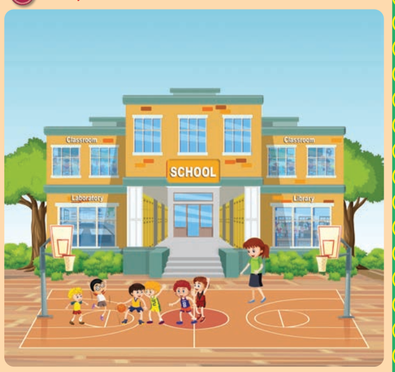
Classroom
Classroom
Laboratory
Library
SCHOOL
The labels are printed on the building itself. The five crops below keep the printed position of each one.
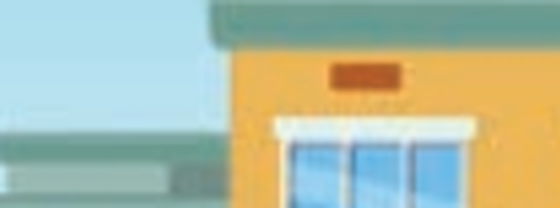
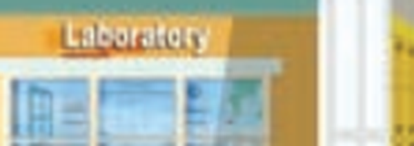
Open the source page · Pupil’s Book · p. 15
The original supplied image, unchanged. Open it at full size to review the artwork and print.
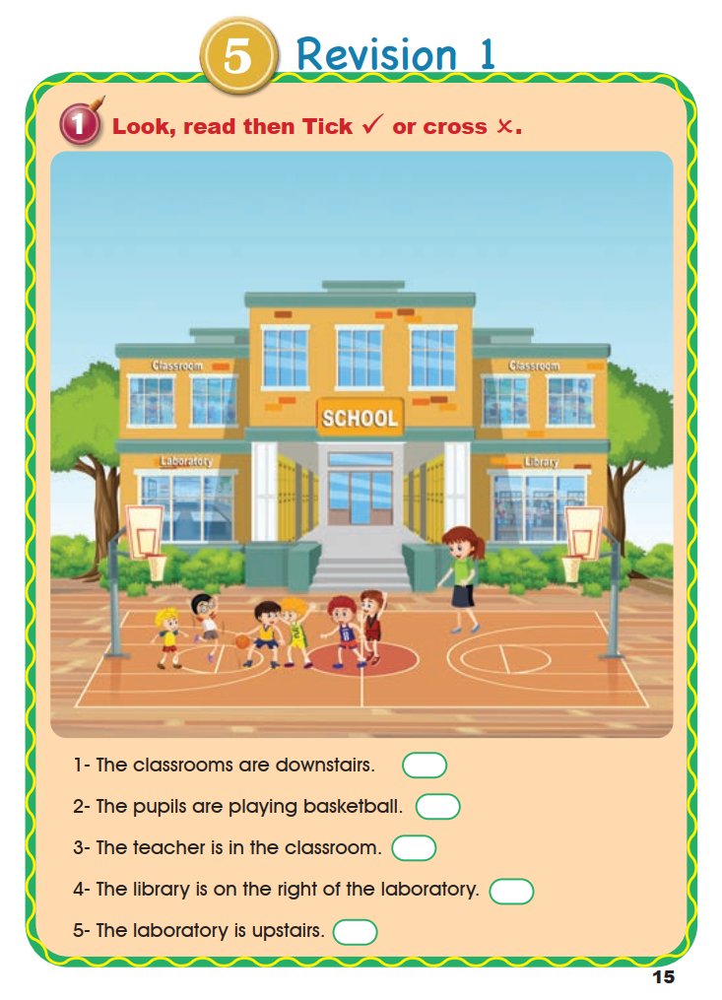
2. Listen then complete the table.
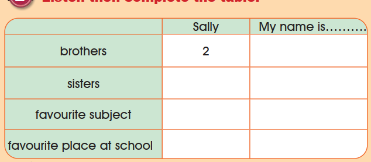
3. Listen and tick ✓.
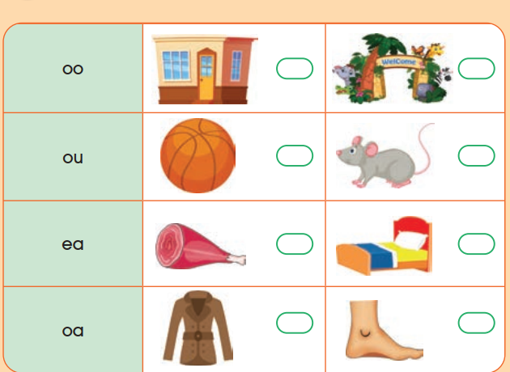
Open the source page · Pupil’s Book · p. 16
The original supplied image, unchanged. Open it at full size to review the artwork and print.
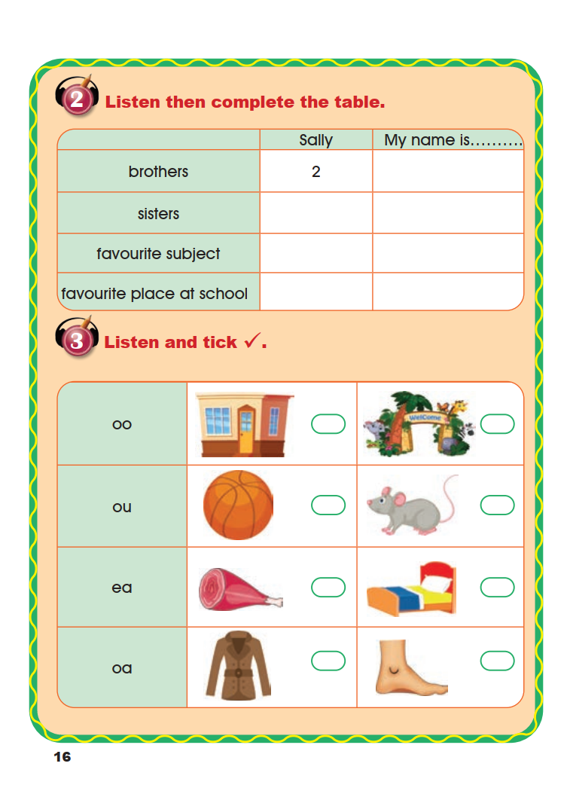
4. Read, match then circle.
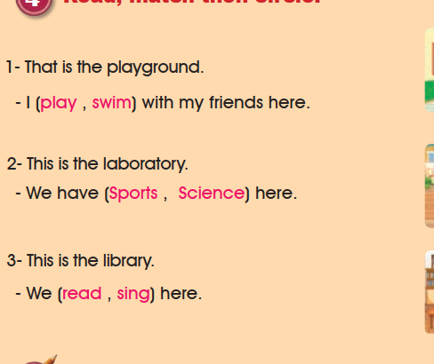
1- That is the playground.
- I (play , swim) with my friends here.
2- This is the laboratory.
- We have (Sports , Science) here.
3- This is the library.
- We (read , sing) here.
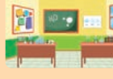
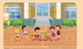
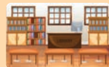
Open the source page · Pupil’s Book · p. 17
The original supplied image, unchanged. Open it at full size to review the artwork and print.
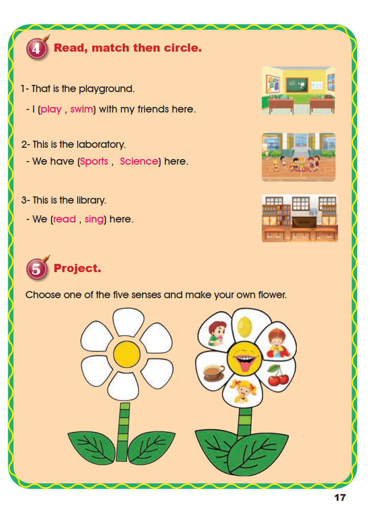
Project.
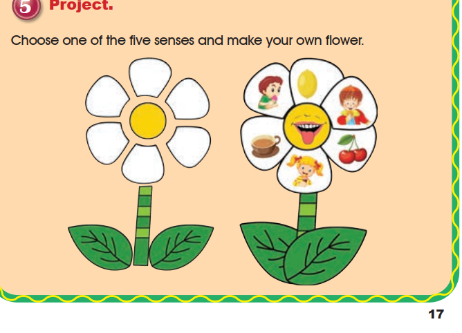
Choose one of the five senses and make your own flower.
The project is a making activity: five petals, one sense each, drawn or cut out by the pupil. No printed answer exists.